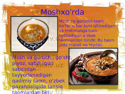
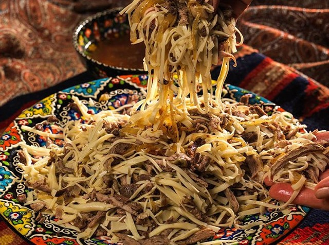
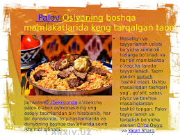

O'zbek milliy taomlari
O'zbek milliy taomlari dunyo taomlari orasida eng shirin, xilma - xil taomlardandir. Sharq madaniyatida mehmonni dasturxonga turli shirinliklar, murabbolar qo'yish, shirin taomlar tayorlab olib kelish odatga aylangan. O'zbekiston xalqlari orasida ham bu odatlar juda rivojlangandir. O'zbek milliy taomlaridan juda ko'pchiligi sharqda ham, g'arbda ham mashhurligini inobatga olib, biz o'zbek milliy taomlarini tayorlash, dasturxonga tortish haqidagi o'z fikrlarimizni sizga tortiq etmoqdamiz.


Varaqi somsa
O'zbek pazandaligida varaqi tipidagi somsalar tayorlash texnologiyasiga ko'ra ikki xil bo'ladi: yo'g'da qovuriladi yoki tandirga yopib pishiriladi. Har ikkala xili ham to'y, bayram va aziz mehmon dasturxoniga tayyorlanadigan ma'zar hisoblanadi. To'y ma'zariga va aziz mehmon dastuxoniga atalgan rasmana varaqi somsa bunday tayorlanadi. Iliq suvga tuz va eritilgan qo'y yogi yoki sariyog' solib qattiqqina xamir qorganingizdan so'ng 10 - 12 minut o'rab qo'yib, tindirib, yana mushtlaysiz. Shundan so'ng o'qlov yordamida juda nafis (1 - 2 mm) qilib yoyasiz. Yoymaning yuzasiga yog' surkab, eni 7 - 8 sm keladigan tasmalar kesasiz. Tasmalarni 3 - 4 tasini bir - birini ustiga qo'yib yana eni 7 - 8 sm keladigan qilib kessangiz, 3 - 4 qavatli kvadrat jildlar hosil bo'ladi. Jild o'rtasini juva bilan nafisroq qilib yoyasiz, chekkalari esa qat - qatligicha qolaveradi. Shu usulda tayorlangan jildlarga bir choy qoshig'ida qiyma solib uni ikki buklaysiz, chetlariga qo'l tekkizmay qiyma solingan joyi atrofini barmoqlar bilan ezib yopishtirasiz. Ana shu somsalarni dog' bo'lib turgan frityur yog'ga solib, qizarguncha qovurasiz, chekkalari xuddi kitobning varaqlariga o'xshab chiroyli chiqadi. Qiymasi bunday tayorlanadi: kam yog'roq qo'y (mol) go'shtini qiymalagichdan o'tkazib, juda mayin qilib to'g'ralgan piyoz, murch va tuz qo'shib yaxshilab aralshtirasiz. Dog'langan yogdan tovaga solib qiymani jazlab olasiz. Go'sht bilan piyoz seli terilguncha kovlab turasiz. So'ngra qiymani laganga solib yoyib sovitasiz va jildlarga solib yuqorida aytilganidek qilib tugasiz. Somsalarni qovurib olganingizdan keyin likopchalarga, laganga solib, yuziga qand upasidan sepib dasturxonga tortasiz. Masalliq: xamiri uchun 500 gr oq un, 50 gr eritilgan qo'y yog'i (sariyog'), 0,75 stakan suv ,bir choy qoshig'ida tuz; qiymasi uchun 400 gr yog'siz go'sht, 3-4 bosh piyoz, ta'bga ko'ra murch va tuz solasiz. Frityur uchun 1 kg o'simlik moyi dog'lanadi.

Qovurma palov
Asosan qo'y go'shti bilan va qo'y yog'ida qovurib tayyorlangani sababli bu palov g'oyat issiqlik taom hisoblanadi. Uni sovuqlik ovqatga aylantirish uchun, ayniqsa yoz faslida va issiqmijoz kishilar to'planganda paxta yog'i va mol go'shti solib tayyorlanadigan varianti ham bor. Qo'y yog'ini kubik (1x1x1 sm) shaklida yoki bodomday-bodomday qilib to'g'raysiz. Go'shtni esa xuddi kabobga to'g'raganday, bosh barmoqning birinchi bo'g'ini kattaligida kesasiz. Asosan qobirg'a va son go'shtlari tanlab olinadi. Qobirg'a suyaklari 4 sm kattalikda, ilikli suyak esa 10 sm dan oshmaydigan qilib chopiladi. Ushbu palov uchun oq tuxum piyoz va mushak yoki sariq mirzoyi navli sabzilar tanlanadi. Piyozni halqa-halqa qilib, sabzini gugurtning cho'pi kattaligida, somoncha shaklida to'g'rash kerak. Qozonni quruq qizdirgandan so'ng dumba yog'ni solasiz va o'rtacha olov berib eritib, jizzasini olasiz, so'ng sustroq olovda to oq tutun chiqquncha yorni dog'laysiz. Yaxshi dog' bo'lganini bilish uchun yoqqa yirik tuz tashlasangiz, tasir-tusur otiladi, shundan so'ng bir bosh archilgan piyoz yoki barmoqdek yaydoq qovurg'a suyak tashlab qizartirib so'ng olib tashlash kerak. Ayniqsa palovni paxta yog'ida tayyorlaganda bu metodning ahamiyati katta: o'simlik yog'idagi gassipol deb ataluvchi zaharli moddani kuchini qirqib degassipolga aylantirishda piyoz va suyak tozalovchi modda vazifasini o'taydi. Yog' yaxshi chuchib, dog' bo'lganda piyozni tashlaysiz, kavlab-kavlab, qizarguncha jazlaysiz. Piyoz shig'il bo'lib qizarganda go'shtni tashlang, buni ham kavlab sirti qobiq olganida, sabzini solib mo'rtligi yo'qolguncha qovurasiz. So'ngra suv quyib, sust olovda mildiratib qaynatasiz, tuz va ziravorlar ham suv quygandan so'ng solinadi. Palovning lazzatli chiqishi uzoqroq qaynashiga bog'liq. 1 soatcha mildirab qaynasa, masallig'i, ziravorlardagi moddalar erib yaxshi sintez bo'ladi. Bir yoqdan qaynashi bilan bir yoqdan guruch solish natijasida palov chaynami belazzat bo'lib qoladi. Palov zirvagi me`yoriga yetib qaynaguncha, guruchni tozalab, yaxshilab yuvasiz. Guruch asosan 3 marta yuviladi, albatta upasi kam guruch bo'lsa buncha yuvish kifoya. Upasi ko'proq guruchni 4 5 marotaba erinmay yuvish zarur, shunda palov sochiluvchan, dona-dona bo'lib pishadi. Yuvilib, suvi yaxshilab sirqitilgan guruchni zirvak yuziga bir qatlam qilib solasiz. Uchoqdan chug'ni tortib olib, kuchli alanga berasiz va darhol guruchga suv quyasiz. Palov tayyorlayotganda suv quyish juda mas`uliyatli ishdirki, bu, guruchning qancha suv ko'tarishini bilishni talab etadi va palovpazning tajribasiga ham bog'liq bo'ladi. Shu sababli suv normasini aniq aytish qiyin, buni har bir pazanda qozon ustida uzi hal qiladi. Harholda quyilgan suv guruch yuzasidan kursatkich barmoqning birinchi bo'g'ini darajasida, ya`ni 1 1,5 sm bo'lsin. Alanga kuchayganda palovning bir tekis qaynashiga erishmoq muhimdir. Qozonning bir tomoni qaynab, bir tomoni qaynamasa osh tirik bo'lib qoladi. O'rtasi qaynamasa tuzi kamligidan dalolat. Palovga tuz ikki marta solinadi: zirvagiga va guruch suvni tortmasdan turib. Qozon bir tekis qaynaganda tatib ko'rib, tuzini rostlaysiz va suvini to'la tortganda damlaysiz. Suvi tortilganini bilmoq uchun guruch yuzasiga kapgirning teskarisi bilan urib kursangiz gup-gup ovoz beradi, agar shilp-shilp qilsa, demak suvi hali tortil-magan va alangani kuchaytirish kerak. Damlashdan oldin guruchni qozonning o'rtasiga gumbaz qilib to'plab, maxsus damcho'p yoki yog'och qoshiqning sopi bilan suqib chiqsangiz, teshikchalar hosil bo'lib, suvi qozon tubiga ketib, bugi tepaga ko'tariladi. So'ng damtovoqni yopasiz va uchoqdan chug'ni tortib olasiz. Gazda pishirayotgan bo'lsangiz shamdek qilib pastlab qo'yasiz. Gaz komforkalaridan birini palov pishirishga maxsus moslab olish zarur. Buning uchun gaz chiqadigan teshikchasiga bigiz tiqib kattaroq ochiladi, shunda alanga varillab yonadigan bo'ladi va palovning qaynashi osonlashadi. Damlash muddati 25 30 minut. Damtovoqni ochgach, palovni kavlab yaxshilab aralashtirasiz. Shunda go'shtlari va sabzisi guruchga bir tekisda qorishadi. Guruch bir-biriga mushtlashib qolgan bo'lsa kapgir bilan ajratib yuborasiz. Palovni katta laganga gumbaz qilib suzasiz, ustiga go'shtlarini joylaysiz va dasturxonga salat bilan birga keltirasiz. Salat yoz va kuz fasllarida shakarob, achchiq-chuchuk, qishda kertilgan turp, bahorda esa rediskadan iborat bo'ladi. Masalliq: 1 kg guruch, 1 kg qo'y go'shti, 250 gr qo'y yogi, 45 bosh piyoz, 500 gr sabzi, 1 choy qoshig'ida zira, shuncha zirk va shuncha tuyilgan qizil garmdori, tuz esa ta`bga ko'ra solinadi. Devzira palovni qovurma palov bilan ivitma palov (tavsiyalar ga qarang) usullarida pishiriladi. Qo'y yog'i va qo'y go'shtining hamda sabzi va piyozning to'g'ralishi yuqoridagi tavsiyada kursatilganidek masallilarni qovurish va zirvagining pishirilishi ham bir xil Biroq guruch ozroq go'sht va sabzisi ko'proq solinadi.Yana bir farqi, guruchni 5 - 6 marta yuvib, iliq suvga 2 - 3 soat ivitib quyish kerak. Zirvakka suv normadagidan ko'proq quyiladi, chunki bu guruchni suv kutarish koeffitsiyenti 1:5 ga tengdir, boshqa nav gu-ruchlarda esa 1:3 ga to`g`ri keladi. Shunday ekan, devzira guruchdan palovni risoladagidek tayyorlay olish uchun, avvalo, qovurma hamda ivitma palov tayyorlashni yaxshi o'rganib olish tavsiya. Palovni dasturxonga tortish oldidan qozonda yaxshilab aralashtirib laganga gumbaz qilib solinadi, yuziga suyakli go'shtlarni terib, kertilgan turp bilan birga keltiriladi, alohida idishda uzum sirkasi ham ko'yiladi. Masalliq: 800 gr guruch, 1 kg qo'y go'shti, 300 gr qo'y yog'i, 4 - 5 bosh piyoz, 1 kg sabzi, 1 choy qoshig'ida zira, shuncha zirk, shuncha tuyilgan qalampir, yoki bir quzoq yangi qalampir, tuzi esa ta`bga ko'ra olinadi.
